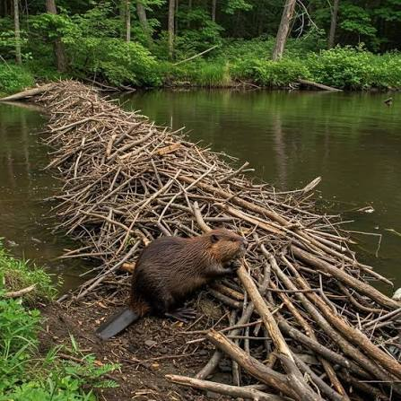
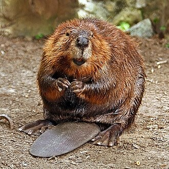

El Castor como Ingeniero Ambiental
Para comprender el impacto positivo de reintroducir esta especie en los ríos ingleses, se deben destacar sus funciones clave:Gestión hídrica: Sus diques ralentizan las corrientes, reduciendo de forma drástica las inundaciones río abajo.Filtrado natural: Las estructuras retienen sedimentos y contaminantes, mejorando la pureza del agua.Biodiversidad: Las zonas inundadas crean estanques idóneos para el desarrollo de nuevas plantas, insectos y anfibios.Resiliencia: Ayudan a mantener el agua almacenada en épocas de sequías severas, protegiendo los suelos colindantes.

Planes Actuales: Tras siglos de ausencia, diversos programas científicos buscan el retorno controlado del castor en Inglaterra. El monitoreo constante evalúa cómo transforman positivamente los valles fluviales modernos. Beneficios sociales: Su actividad reduce los costos económicos derivados de desastres por inundaciones en comunidades rurales de la región. Cooperación local: El éxito de los proyectos actuales en 2026 radica en el trabajo conjunto con agricultores y dueños de tierras para evitar conflictos de espacio. Concientización: Fomentar el cuidado de esta fauna autóctona es vital para restaurar de forma permanente los entornos naturales británicos que colapsaron.